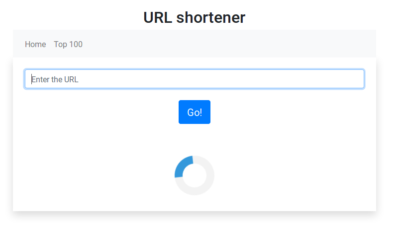

URL shortener
As part of an online project, developed a full functional URL shortener using Ruby on Rails 6 for the backend and React Router for the frontend. The description is as follows:
Backend:- Given a URL, a shortcode is given back for that URL of the shortest possible length relative to the number of links currently in the system. The implementation uses base 62 encryption.
- Invalid URLs are not saved into the system.
- The webpage succesfully redirects to the full URL by accessing the generated shortcode.
- There is an API response (JSON) with the top 100 most frequently accessed shortcodes.
- The title for each of the shortened URLs is fetched (using OpenUri) and stored in the database using a background job (using ApplicationJob).
- There is a view for the Top 100 most frequently accessed URLs.
- There is a form for inputting URLs into the system.
- Entering a valid URL results in displaying the new shortened URL to the user.
- Entering an invalid URL results in displaying errors to the user.